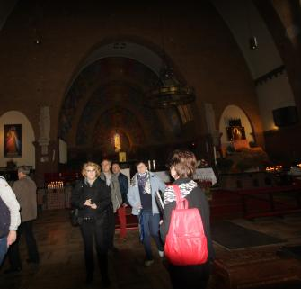
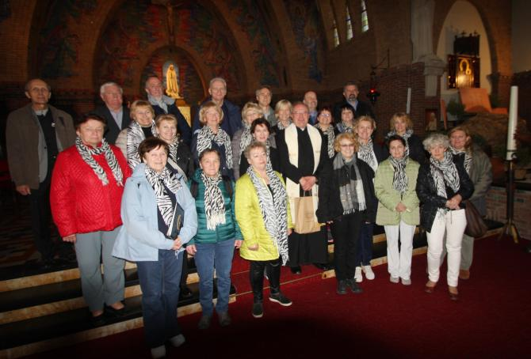

do aktualności
do aktualności2017-04-28 do 03-05-2017
28 kwietnia. Za oknem leje a my w super humorach wyjeżdżamy do Holandii.
O północy docieramy na pierwszy nocleg. Rano wstajemy, śniadanie i jedziemy dalej. Po drodze jak zawsze „popasy”. Kości się zastały czyli gimnastyka, lub relaks.
Ale najczęściej spędzamy czas tak … hahaha, czyli w kolejce.
Jeżeli „cichaczem” podkradamy mężczyznom kabinkę, na straży stoi zawsze męska część Cameraty.
No cóż, koniec dobrego, wsiadamy i ruszamy dalej. Po drodze jak zawsze wykład Lusi na tematy historyczne związane z danym regionem.
Pobudka, śniadanie i rześki ranek pod hotelem w Rotterdamie.
Jesteśmy na miejscu.

W tym kościele św. Willebrorda (Polska Parafia pw. NMP Gwiazdy Morza) oprawiamy muzycznie mszę oraz dajemy koncert.
Koncert bardzo się podobał. jeszcze pamiątkowe zdjęcie.

Teraz idziemy zwiedzać Rotterdam.
Po drodze wskoczyliśmy w słynne buty holenderskie, czyli saboty (drewniaki).
Jesteśmy troszkę zmęczeni, ale było warto.
I nastał nowy dzień. Dzisiaj jedziemy do Amsterdamu, gdzie przywitał nas deszcz.
Wyruszamy w rejs kanałami.
Wszędzie widać pozostawione rowery, rowery i rowery a tu … Anka i rowery.
Przestało padać! Zwiedzamy dalej.
Podziwiamy piękne obrazy.
Koniec galerii obrazów. Teraz idziemy tam, gdzie uwielbiają być kobiety.
Brylanty!!! Tu nie trzeba komentarza, wystarczy popatrzeć.
Po długim, męczącym dniu chwila wspólnego wypoczynku z piosenką na ustach.
Koniec pobytu w Holandii. Jedziemy do Brunszwiku, ale po drodze niespodzianka …
można powiedzieć „Festiwal tulipanów”. Na początek wszyscy (którzy się załapali).
A teraz rozchodzimy się zwiedzać. Mamy czas wolny.
Są i "butki".
Jest tu tak pięknie, że trudno coś wybrać ze zdjęć, to trzeba zobaczyć.
Koniec zwiedzania, wyjeżdżamy.
Poranek w Brunszwiku. Wszyscy gotowi do drogi.
O nie, nie. Nie wszyscy są też nasze śpiochy.
Zwiedzamy.
No chyba już są zmęczeni.
Koniec wycieczki. Wracamy do domu.
do aktualności


 Prowadzenie strony oraz zdjęcia: Małgorzata Wysocka-Cebula
Prowadzenie strony oraz zdjęcia: Małgorzata Wysocka-Cebula